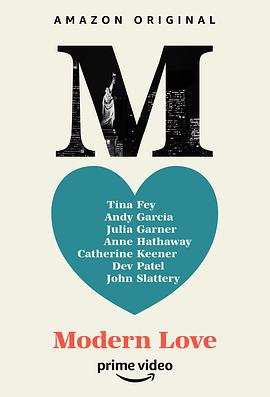

摩登情爱 第一季 / Modern Love Season 1
又名：现代爱情 / 现代之爱
作品信息
| 导演 | 约翰·卡尼 / 埃米·罗森 / 汤姆·豪尔 / 莎朗·豪根 |
| 编剧 | 约翰·卡尼 / 莎朗·豪根 / 汤姆·豪尔 / 奥黛丽·威尔斯 |
| 主演 | 安妮·海瑟薇 / 安德鲁·斯科特 / 蒂娜·菲 / 约翰·斯拉特里 / 戴夫·帕特尔 / 凯瑟琳·基纳 / 安迪·加西亚 / 索菲亚·波多拉 / 小约翰·加拉赫 / 奥利维亚·库克 / 艾德·希兰 / 加里·卡尔 / 朱莉娅·加纳 / 谢伊·惠格姆 / 克里斯汀·米利欧缇 / 劳伦斯·波萨 / 简·亚历山大 / 詹姆斯·斋藤 / 布兰登·维克多·迪克森 / 安吉拉·吴 / 亚历山大·詹姆森 |
| 类型 | 喜剧 / 爱情 |
| 制片国家/地区 | 美国 |
| 语言 | 英语 |
| 首播 | 2019-10-18(美国) |
| 季数 | 1 |
| 集数 | 8 |
| 单集片长 | 30分钟 |
| IMDb | tt8543390 |
最后一次看到是 2026-08-12T21:11:36+08:00 · 豆瓣原页